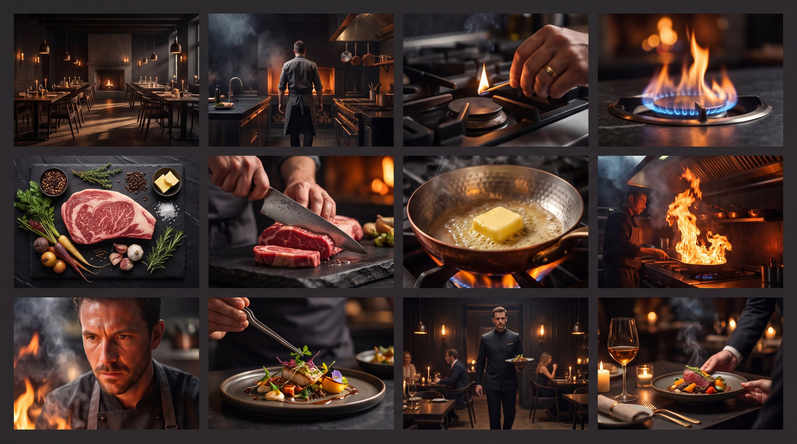
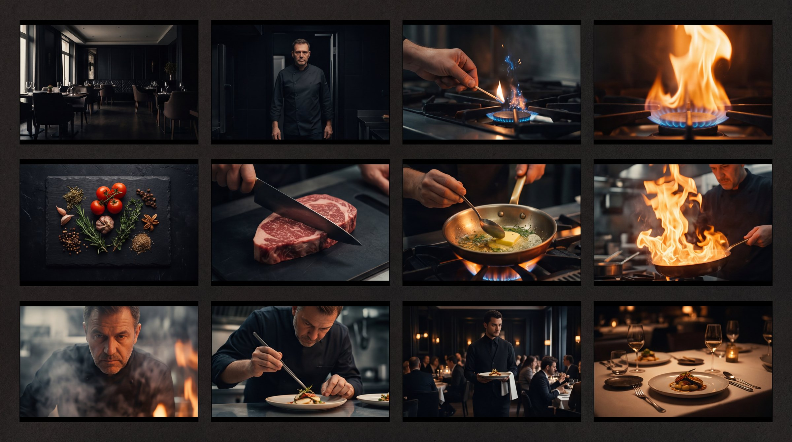

FUEGO
Cocina como ritual


Prompt
Create a premium cinematic storyboard contact sheet for a 30-second luxury restaurant commercial, presented as 12 distinct widescreen frames in a clean 4x3 grid. The concept is "fire as ritual." Show: an empty restaurant before service, a chef entering a dark kitchen, close-up of a hand lighting the stove, blue flame becoming orange, raw ingredients on black stone, knife cutting through red meat, butter melting in a copper pan, flames rising dramatically, intense chef portrait through smoke, elegant plating with tweezers, waiter carrying the finished dish through a sophisticated dining room, final hero shot of the dish arriving at an intimate table. Dark amber atmosphere, deep shadows, glowing firelight, black wood, aged brass, cinematic smoke, sensual macro photography, controlled handheld energy, anamorphic lenses, shallow depth of field, premium global restaurant campaign, highly realistic, refined color grading. Maintain the same chef, kitchen and visual identity throughout every frame. No text, no logos, no repeated shots, no comic-book style.